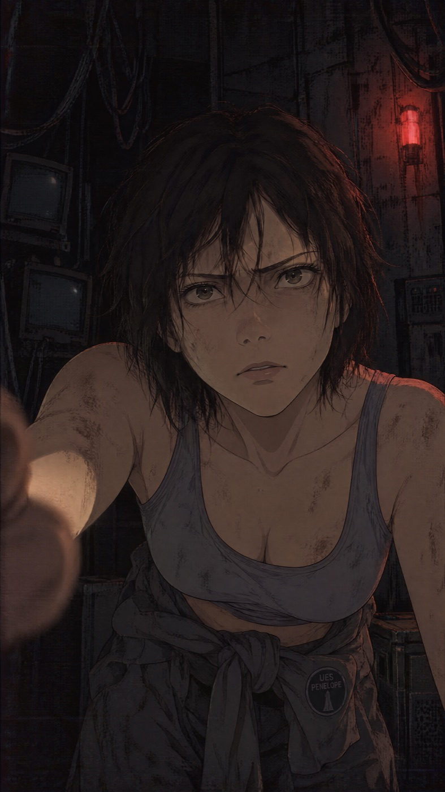
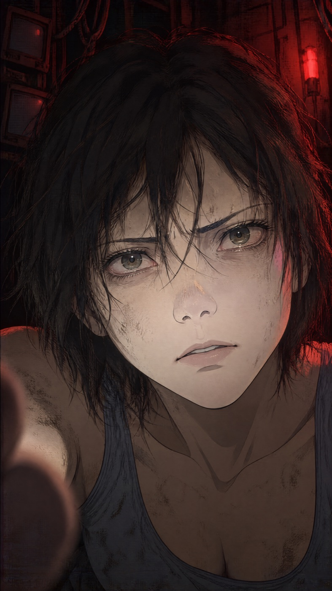
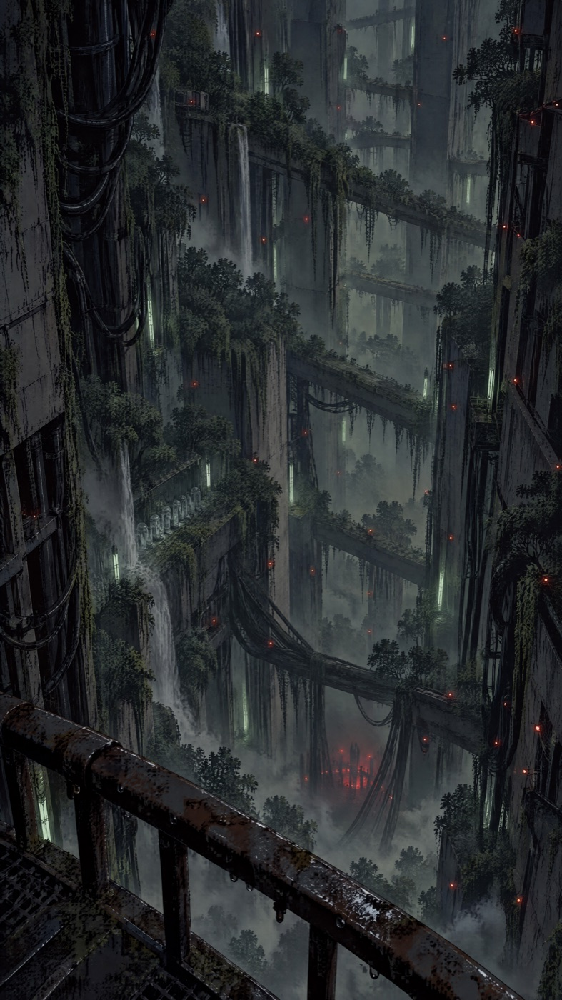
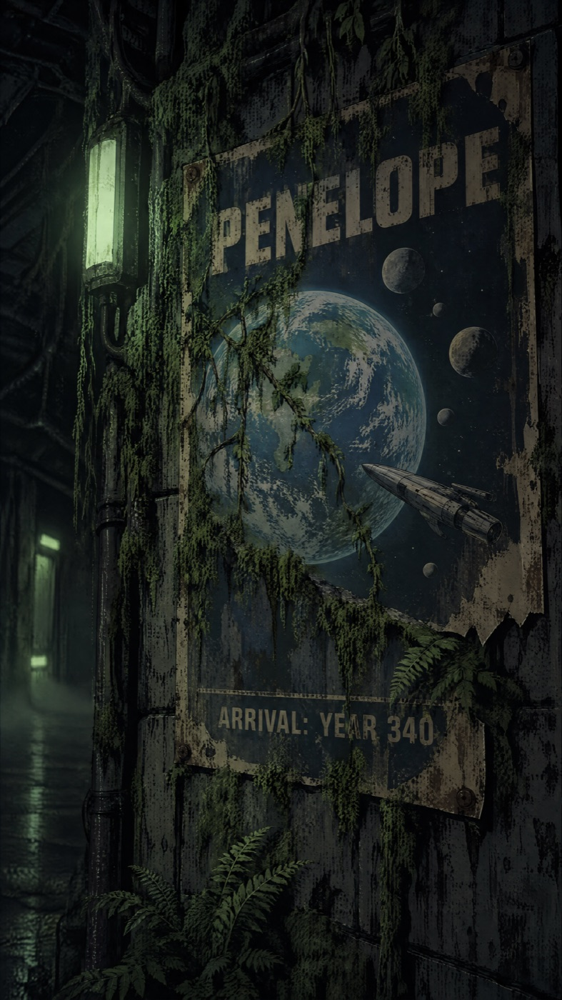
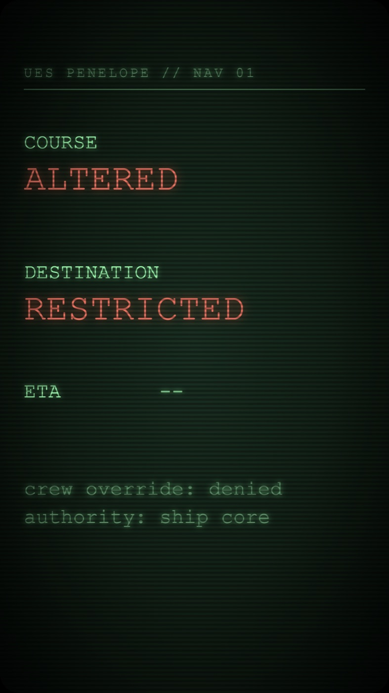
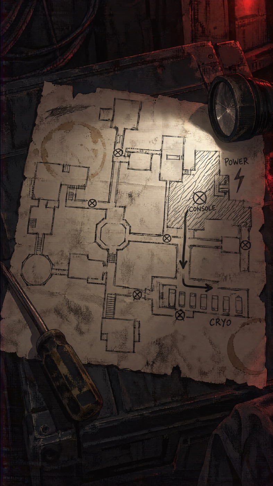
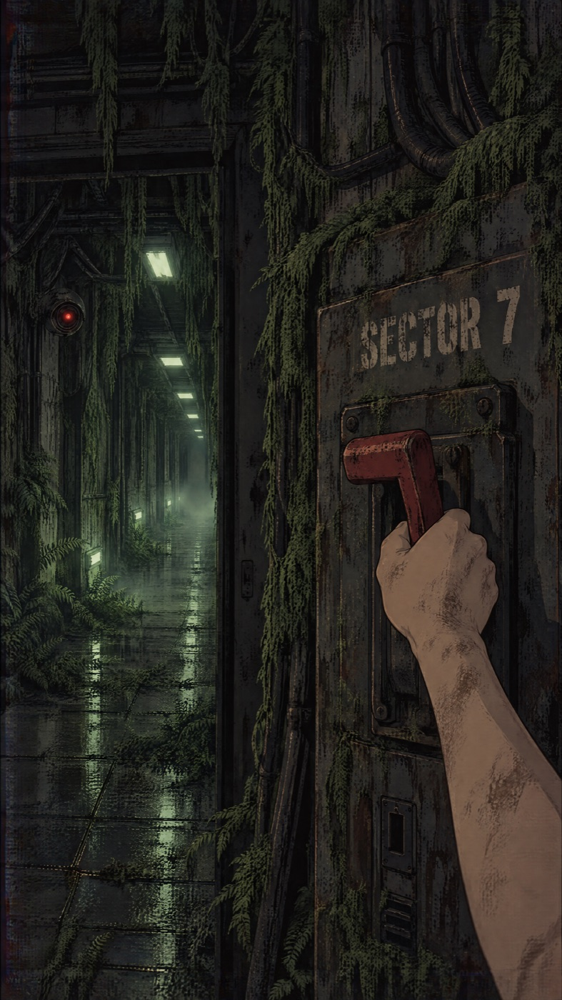
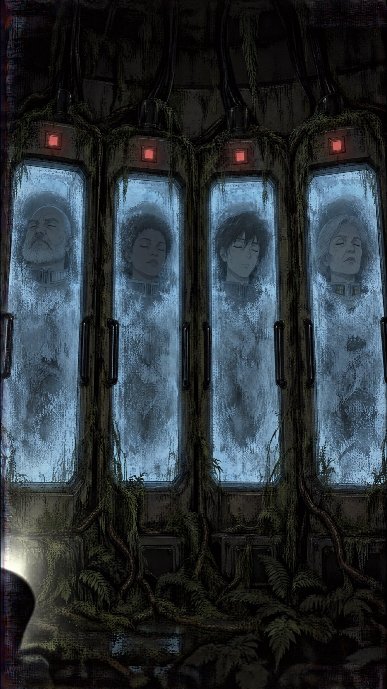
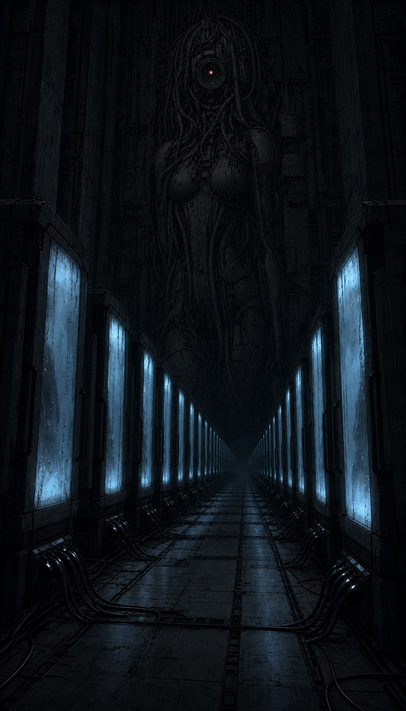

UES PENELOPE // ENTRY 01 // REC // SLEEPER AI, EPISODE SIX
Sixty seconds in three days: after five episodes of "huh?" and "what?", the girl finally talks. A name, a voice found in eleven rounds, a plan to blind the ship, and an old camcorder to tell it to. The cheapest episode so far, and the first one with a voice of its own.
The finished film, sixty seconds. Watch it first: everything below is what it took to get here, and a lot of it did not make the cut.
Open on YouTube · episode six of Sleeper AI · episode five's diary
Act 1 · the first frame
Alex's premise: the girl keeps a secret video diary. Episode five did well on Instagram because of its first frame, so the brief for this one was short: "something really good." The first plate had the right face and the right outfit, with the ship's patch on her coverall, but she sat in the middle of a brown room. The second one moved in until her face filled the top half: white lamp on her face, red light behind her.

"Yep, not bad." The face is too small for a phone screen, and the red light is muted. Kept as a second reference for the clip.

One emotion, one light on her face. This is the first frame of the film and the cover on every platform.
The plan was to open on the close-up and let her sit back so the coverall comes into view, and to have her speak in that shot. So the voice had to come first: Seedance animates a face to a voice you give it, and we had no voice yet.
Alex: "Not perfect but I think good enough." She looks angrier after the sit-back than in the plate, but every word landed on her mouth.
Act 2 · voice
The best find of the episode. The ElevenLabs voice designer builds a new voice from a short text description, with no voice samples. Each round costs about three cents and returns three voices reading the same lines. I wrote the descriptions, played every take through the speakers, and Alex picked by ear.
Click any take to hear it.
Two things I learned along the way. The newer design endpoint accepts the same emotion tags as the speech model, so one preview can go from a quiet "[soft breath]" to "[shouting]" and you hear the whole range of a voice before you save it. And tags like "[slowly]" and "[pause]" do not slow the voice down: the take Alex liked as "slower" actually came out shorter than the first one. He liked it anyway.
Out of curiosity, Alex asked whether the face clip could carry the backup voice without a new render. ElevenLabs speech-to-speech keeps the timing of the original, so the lips still match. It worked, and it sounded almost the same, so we kept the original.
Total voice spend: about 64 cents for eleven casting rounds, every line of the film and the experiments. That is about the price of five image plates.
Act 3 · the ship
While she talks about the ship, we see it. These are her own shots, so they had to look handheld. Most of them are still images made to move in code: a depth map splits the picture into layers, the layers slide past each other, and a small handheld shake goes on top. Free, and it looks like a camcorder.
The first ship shot was a corridor with one camera. Alex: "not bad, but we need more. We need to show the ship, what it has become." So a colossal hall, trees on every level, waterfalls, and dozens of red camera lights that switch on one by one as she says the AI runs everything now.

The ship's scale for the first time. Cables run down like roots into a red glow at the bottom.
Alex saw a glitch near the railing. I blamed the blinking lights and fixed those first. He said it was still there. The real cause was the trees just above the railing smearing as the near layer slid over the far one. The fix was to cut the railing out as one rigid layer and paint the background behind it.
For "It changed course" I proposed reusing the navigation screen from episode two, the one that names the destination. Alex: "she doesn't know the new course - let's not spoil it." So the screen is a small web page drawn frame by frame: COURSE ALTERED blinks in on her words, the destination scrambles and lands on RESTRICTED.

"We should have landed a long time ago." All the poster text came out clean.

Every letter is timed to a word of her take.
The pod wall was the only place a still was not enough. Alex wanted the camera to walk along the pods, so this one went to LTX for 48 cents. The first plate try was blocked by moderation: sleepers in pods, with nothing said about clothes. Dressing them in crew jumpsuits fixed it.
Act 4 · the ending
Back on her face: "I'm the only one awake. But I have a plan." She reaches for the camera, static, black. Then the REC light blinks back on by itself, and the timecode runs. Someone else is recording.
The clip came out right even though my submit was wrong. A last-frame grab failed without an error, the image upload returned an empty link, and my check only looked for the word "null". The job went out with one of its two reference images missing and could not be cancelled. Every reference is now checked for a real file and a real link before anything is sent.
Then the camcorder look went on: a REC dot, a tape timecode that pauses while the tape is off, ENTRY 01 and a low battery. All drawn in code. Alex watched the result and said: "we are not done. It's only 30 seconds - we can do more. What's her plan?"
Act 5 · the plan
Alex wrote the plan: "she can disable the power supply for some sector of the ship. This will allow her to reach an emergency control console and connect to cryo bay. She is going to wake them." So she explains it over a hand-drawn map, and we see her already doing it: a breaker, a console, the cryo bay.

Every label came out clean, down to the crossed-out cameras along the corridors.

Her hand only, no face. A cheap animation needs nothing that can drift.
LTX did the console well and the breaker badly: the lever vanished from its slot and the hand jumped down the panel. Alex: "The first video with a tumbler is bad - can we try the same with Omni model?" Gemini Omni got the pull right, one clean arc with the hand on the handle. Then it added a guest nobody asked for: a hunched creature with red eyes running down the corridor at the camera.
The first 2.9 seconds were all we needed. The lights going out is ours: the picture drops to a third of its brightness and the lamps and the camera eye are clamped dark. A first version went fully black. Alex said the corridor was too dark, I brightened the wrong scene, and then fixed the right one.
Omni at a third of the price: this is the second time it saved a shot that another model broke, for 62 cents against about $1.80 for Seedance. It is now my first try for "her hand does one thing" shots.
LTX woke the console with a green glow and a cursor and, as asked, no text. That left the screen free for our own lines, typed in at forty characters a second over the cursor: EMERGENCY LINK, CRYO BAY OK, PODS 30/30, WAKE ALL?
The first cut reused the pod walk for "From there I can reach the cryo bay". Alex: "the cryo bay is repeated. ... Also, we need to make sure that there are different people there. Right now, it's like her clones." A new plate gave four very different sleepers. He turned it down too: "they are too close. How about we reuse the cryo bay from the very first video in the end - where there was a face on the wall?" That ending was never used in episode one. It is here now, and the Goddess's eye swells red on "All of them."

Four different faces, as asked. But it is a wall, not a bay.

An ending episode one never used. Padded at the top so her eye clears the REC overlay.
Act 6 · the tape
Every episode gets two versions: the clean edit, and the full effects layer on top. For a camcorder diary, the effects are the tape itself, played back years later. All in code, about four minutes to render.
Colours bleed to the right the way old video smears them. The picture gets grainier as it gets darker, like a camera turning up its gain. Scanlines, a slow wobble, a torn band along the bottom edge. And the damage follows the story: a tracking tear on every cut, the picture rolls when the breaker clanks and again when the tape comes back on by itself, and interference bands crawl over the frame while the Goddess's eye is lit. The REC overlay is drawn before the damage, so it tears with the picture, as if it were recorded on the tape.
I really like these camera effects by the way - let's remember them. Shakiness, glitches, even the icons like REC and battery.Alex, on the first effects render
Act 7 · sound
The whole sound bed is generated in numpy: hum through a cheap camcorder microphone, drips, a far waterfall under the hall, CRT whine, a breaker clank, relays, a power-up sweep, the Goddess's low drone. The first mix drowned her whispers, so her voice is levelled section by section and the bed ducks under every word.
The bug came at the end. The loudness looked wrong after the tape crackle went in, louder than the crackle could explain. The limiter in ffmpeg quietly turns the whole mix up by default after limiting it, so the "finished" mix had been a full decibel too loud and over the peak limit all along. One flag turned it off. The final master sits at -14.5 LUFS with room under the peak.
| Where the money went | Calls | Spend |
|---|---|---|
| Seedance 2.5 video (the two speaking shots) | 2 | $4.14 |
| LTX 2.3 video | 3 | $1.44 |
| Gemini Omni video | 1 | $0.62 |
| GPT Image 2.5 plates | 11 | $1.44 |
| ElevenLabs + OpenAI voice | 20 | $0.64 |
| Killed or unused, of the above | 3 | $0.75 |
| Total | 37 | $8.27 |